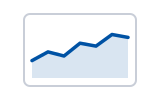
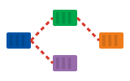
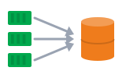

01See · មើលឃើញmetrics
Metrics are numbers over time, like CPU and requests per second.
Metrics គឺជាលេខតាមពេលវេលា ដូចជា CPU និងចំនួន request ក្នុងមួយវិនាទី។
Monitoring និងការរកបញ្ហា · ដឹងមុនអ្នកប្រើ ពេលមានបញ្ហា ហើយរកមូលហេតុ
Metrics ប្រាប់ថាមានបញ្ហា logs ប្រាប់ថាហេតុអ្វី traces ប្រាប់ថានៅកន្លែងណា។

Metricsលេខតាមពេលវេលា
Tracesតាមដាន requestតាមលំដាប់៖ metrics → alert និង logs → រកមូលហេតុ → postmortem។
Space listen · ← → move · K show text
Metrics are numbers over time, like CPU and requests per second.
Metrics គឺជាលេខតាមពេលវេលា ដូចជា CPU និងចំនួន request ក្នុងមួយវិនាទី។

Prometheus collects metrics from every pod.
Prometheus ប្រមូល metrics ពី pod នីមួយៗ។
Grafana turns metrics into dashboards.
Grafana បំប្លែង metrics ទៅជា dashboard។
An alert wakes us up when something is wrong.
Alert ដាស់យើង ពេលមានអ្វីមិនប្រក្រតី។
Logs from all pods go to one place, so we can search them.
Log ពី pod ទាំងអស់ ទៅកន្លែងតែមួយ ដើម្បីយើងអាចស្វែងរកបាន។
Traces follow one request across many services.
Trace តាមដាន request មួយ ឆ្លងកាត់ service ជាច្រើន។
First, I check the events to see what changed.
ដំបូង ខ្ញុំពិនិត្យ events ដើម្បីមើលថា មានអ្វីផ្លាស់ប្តូរ។
Then I read the logs from before the crash.
បន្ទាប់មក ខ្ញុំអាន log មុនពេលវាគាំង។
After we fix it, we write a short postmortem.
ក្រោយយើងជួសជុលរួច យើងសរសេរ postmortem ខ្លីមួយ។
Yes. Metrics say something is wrong. Logs say why.
ត្រូវការ។ Metrics ប្រាប់ថាមានបញ្ហា។ Logs ប្រាប់ថាហេតុអ្វី។
ប្រើទាំងពីរជាមួយគ្នា ដើម្បីរកមូលហេតុឲ្យលឿន។
They're from the new container. Use the previous flag to see the old one.
វាជា logs របស់កុងតឺន័រថ្មី។ ប្រើ flag previous ដើម្បីមើលអាចាស់។
kubectl logs --previous បង្ហាញ log មុនពេលគាំង។
No, it's slow. Response time went up after the last deploy.
ទេ វាយឺត។ ពេលឆ្លើយតបកើនឡើង ក្រោយ deploy ចុងក្រោយ។
The error rate went over five percent.
អត្រា error លើសប្រាំភាគរយ។
A bad config value. We rolled back, and it's stable now.
តម្លៃ config ខុសមួយ។ យើងបាន rollback ហើយឥឡូវវាមានស្ថិរភាព។
Tap a word's play button to hear it. Hide one side, then recall it before you tap to check.
Q. Do we need logs if we have metrics?
Q. បើមាន metrics ហើយ នៅត្រូវការ logs ទៀតទេ?
A. Yes. Metrics say something is wrong. Logs say why.
A. ត្រូវការ។ Metrics ប្រាប់ថាមានបញ្ហា។ Logs ប្រាប់ថាហេតុអ្វី។
Q. Why are the logs empty after a restart?
Q. ហេតុអ្វី logs ទទេ ក្រោយ restart?
A. They're from the new container. Use the previous flag to see the old one.
A. វាជា logs របស់កុងតឺន័រថ្មី។ ប្រើ flag previous ដើម្បីមើលអាចាស់។
Q. Is the site down?
Q. គេហទំព័រដាច់ទេ?
A. No, it's slow. Response time went up after the last deploy.
A. ទេ វាយឺត។ ពេលឆ្លើយតបកើនឡើង ក្រោយ deploy ចុងក្រោយ។
Q. What triggered the alert?
Q. អ្វីបណ្តាលឲ្យមាន alert?
A. The error rate went over five percent.
A. អត្រា error លើសប្រាំភាគរយ។
Q. What did you find?
Q. អ្នករកឃើញអ្វីខ្លះ?
A. A bad config value. We rolled back, and it's stable now.
A. តម្លៃ config ខុសមួយ។ យើងបាន rollback ហើយឥឡូវវាមានស្ថិរភាព។
I'm looking into it now.
ខ្ញុំកំពុងពិនិត្យវាឥឡូវនេះ។
I'll post an update in fifteen minutes.
ខ្ញុំនឹងផ្តល់ព័ត៌មានថ្មី ក្នុងរយៈពេលដប់ប្រាំនាទី។
Say it in your head first, then tap the box to check.